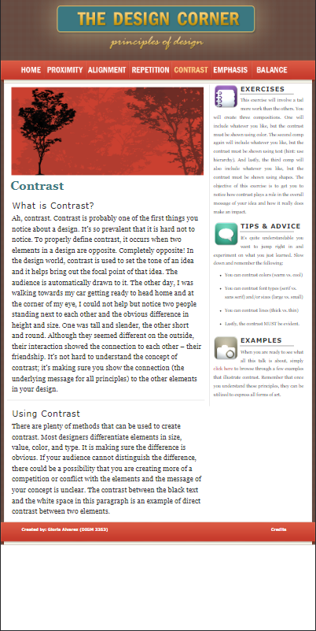

Hick's Law
DoorDash
Doordash.comHick's Law states that the more options a person is given, the less likely they are to make a choice. DoorDash's website is in my opinion a website that is not the best for it. Doordash is a food ordering website that caters to individuals who cannot make it to a restaurant themselves. They have lots of different options for a person to choose what restaurant they want to eat from and sometimes it can be daunting trying to choose what to order from if you have never used the website before.
Rule of Thirds
Children's Center of Austin
Childrens Center of AustinThe Rule of Thirds web design technique is used for creating pleasing aesthetics and balance in images. It basically says that placing items of interest on the “thirds” of an image is more pleasing to the eye than centering or more other symmetrical approaches. These thirds are created by dividing an image (or working space) into nine equal parts, with two equally spaced horizontal lines and two equally spaced vertical lines.
PARC: Repetition
The Design Corner
The Design Corner The use of repetition across a website, document or other medium helps to unify a layout, and ensure consistency. Repetition can be obvious or subtle in the way that you use it. For example, a colour scheme repeated, a consistent header or the same fonts. This website uses repetition by having the same format for each page with same color scheme, but having a different hero image per page